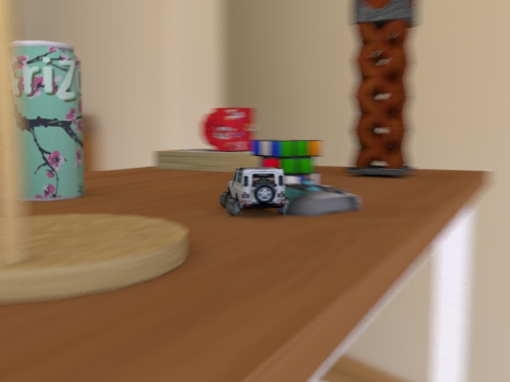
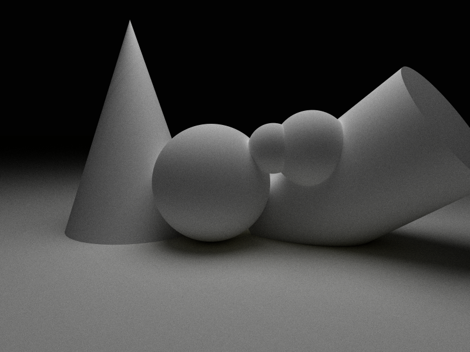

Course Project
OCR-based ID Card Entities Extraction, CCF Big Data Computing Intelligence Contest
Oct. 2019
Objection: Extract entities from blurred and randomly rotated ID Card images
Ranking: 47/193
In this project, we use Mathematica to preprocess the blurred image. We use OCR-based methods to extract entities from images. At last, we use rules to extract valid information by post-processing.
[contest result]

click image for details
Maya Workshop: LandRover Defender 90
Apr. 2020
Objection: Create a scence through 3D modelling, animation and visual effects
In this project, we use basic geometric shapes to modelling a indoor scence. We fine-tune to UV layout for texture mapping. Then, we use expressions to confine object motion. With different cameras and lightings, we made a shot movie of car driving scence.

click image for details
OpenGL Workshop
Autumn 2019
Objection: Learn the basic algorithms of computer graphics and implement them with OpenGL
In this project, we implement Bezier Curve and Bezier surface with C and C++. Also, we use Phong Lighting Model and Ray-Tracing Algorithm with Python. Left is an example of ray-tracing rendering result of some basic geometry.
Triplet Matching
Autumn 2019
Objection: Given a sentence and entities in that sentence, extract all correct triplets
In this project, we use Transformer model to boost model’s ability. We implemented the word embedding encoder and transformer model with Tensorflow.
Go-Bang Game in C language
Autumn 2018
Objection: Design an Go-Bang game with interactive interface and chess-playing strategy
In this project, we designed game interface and implemented Human-vs-Human mode and Human-vs-Machine mode with C. We further optimized the chess playing strategy with α-β pruning algorithm.
{kind=link}
{kind=link}
{kind=link}